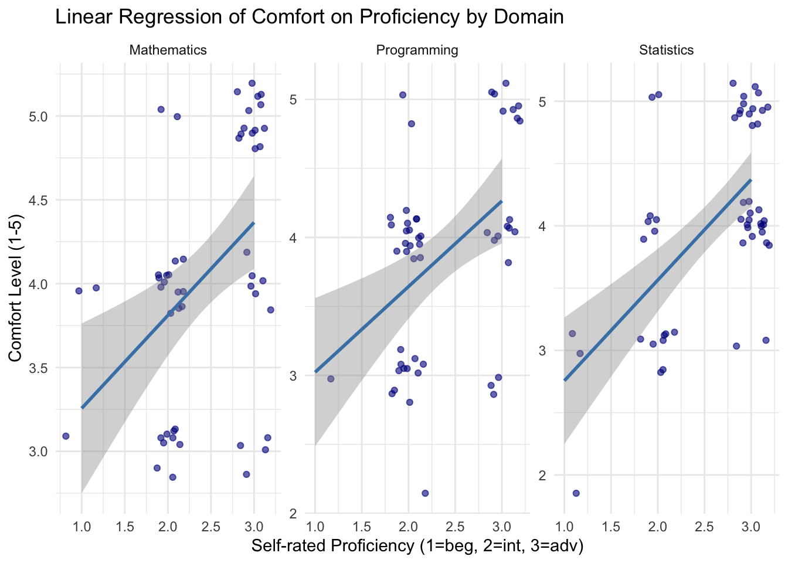
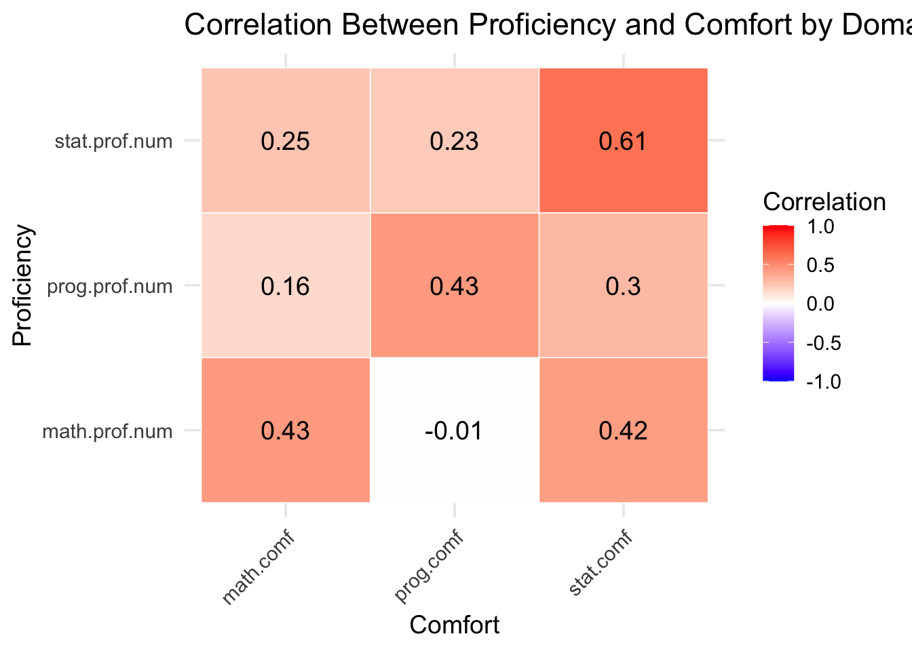

# A tibble: 3 × 4
domain intercept slope r_squared
<chr> <dbl> <dbl> <dbl>
1 Programming 2.40 0.621 0.188
2 Mathematics 2.70 0.554 0.189
3 Statistics 1.95 0.808 0.375Analysis of class surveys
Executive summary
Write a one-paragraph abstract summarizing what you did and your findings. It need not be comprehensive; try to highlight the most important or interesting outcomes.
Data description
This dataset contains survey responses from UCSB undergraduate students enrolled in PSTAT197A, collected to capture their academic background, skills, and project interests. The survey collected personal information alongside self-reported proficiency and comfort in programming, mathematics, and statistics. Additional background measures include the number of upper-division courses completed, domain specialization, and prior research experience in data science and other areas.
The survey also recorded students’ project preferences, including preferred project type (industry vs. lab), programming language, domain, and data science areas of interest, as well as open-ended goals and comments for project placement. Several variables are binary (yes/no), ordinal, numeric, or categorical.
Overall, the dataset provides a detailed profile of students’ academic preparation, skill self-assessment, and project preferences, suitable for analyzing patterns in preparation, interests, and experiences among the PSTAT197A cohort. For our purposes, we believe the data provides a valuable snapshot of PSTAT majors, particularly those most motivated and engaged. While the survey cohort is naturally self-selected, this bias makes the data especially informative: it highlights where the department’s most engaged feel well-prepared or identify gaps in their skills. Understanding these patterns is crucial, as it allows the department to identify strengths and potential areas for curricular improvement.
Questions of interest
- To what extent do students’ self-assessed proficiency in programming, mathematics, and statistics align with their reported comfort in these domains?
Findings
We analyzed the relationship between students’ self-assessed proficiency and comfort in programming, mathematics, and statistics using the survey data. Proficiency responses were converted from categorical to numeric values, and for each domain, we fitted a simple linear regression model predicting comfort from proficiency. The results are summarized below:
In general, across all three domains, higher self-rated proficiency is associated with higher reported comfort. This expected relationship is the strongest in statistics, at almost twice the extent compared to programming and mathematics, who had nearly identical moderate associations.
We further explored these relationships through other visualizations, including scatterplots and a correlation heatmap.

In addition to seeing how the original data is clustered, the plots visually reaffirm our conclusions; within the same domain, students generally feel more confident the more proficient they are.
Thus far, the analysis has been domain-specific. To explore correlations across domains, we generated a correlation matrix, visualized in the form of a heatmap below:

From here, we see some interesting relations. Across the diagonal, we see the same earlier trend of higher proficiency = higher comfort when aligned in the same domain. However, cross-domain correlations are weaker, suggesting that proficiency in one area does not strongly predict comfort in another. Most notably, there appears to be no relationship whatsoever between math and programming. This pattern highlights that students’ perceived abilities are largely within the same domain, with comfort most closely tracking proficiency in the same area, particularly for statistics. The weaker cross-domain associations also suggest potential gaps in transferable confidence, indicating that even students who feel capable in one technical area may not feel equally comfortable applying those skills elsewhere. The relatively weaker alignments highlight gaps where even motivated students may feel less confident relative to their proficiency, necessitating actionable insight for curriculum planning and targeted support.